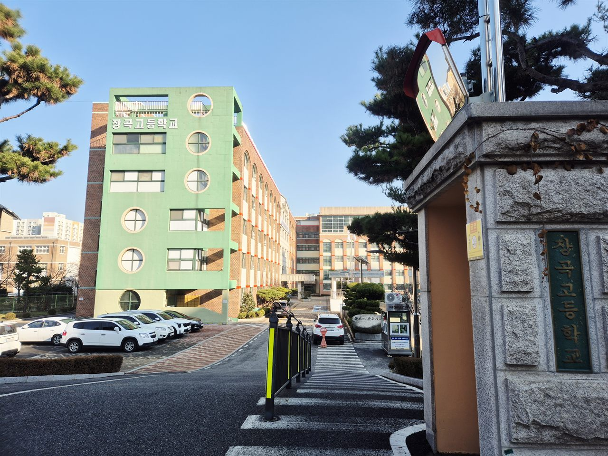

경기도 시흥시 장곡동에 있는 장곡고등학교(장곡고)는 2000년에 문을 연 공립 고등학교입니다. 장곡동·능곡동 일대의 장곡중학교(장곡중)·응곡중학교(응곡중)·가온중학교(가온중)를 나온 아이들이 많이 올라오고, 가까이에 능곡고등학교(능곡고)와 시흥고등학교(시흥고)가 있습니다.
오늘은 장곡고 1학년 학부모님께 가장 많이 듣는 이야기부터 꺼내 보겠습니다. “중학교 때는 수학이 괜찮았는데, 고1 첫 시험에서 무너졌어요.”
이 말씀을 하시는 분이 한두 분이 아닙니다. 그리고 거의 모든 경우에 아이가 갑자기 머리가 나빠진 것이 아닙니다. 시험이라는 게임의 규칙이 바뀌었는데, 아이는 중학교에서 통하던 방법을 그대로 들고 들어간 것입니다. 2학기 기말고사는 보통 12월 초에서 중순에 치러집니다. 10월 초인 지금 규칙부터 바로잡아 두면 아직 두 달이 남아 있습니다.
고1 수학이 중학교와 달라지는 것은 세 가지입니다
막연히 “어려워졌다”로 두면 손댈 곳이 없습니다. 무엇이 어떻게 달라졌는지 셋으로 나눠 보면 할 일이 보입니다.
- 범위가 넓어집니다. 중학교 시험 범위가 교과서 두세 단원이었다면, 고등학교는 그보다 훨씬 넓은 분량을 한 번에 묻습니다. 시험 2주 전에 몰아서 끝낼 수 있는 양이 아닙니다. “벼락치기가 안 통한다”는 말의 실체가 이것입니다.
- 속도가 빨라집니다. 진도가 나가는 속도 자체가 다릅니다. 한 단원을 이해하지 못한 채로 다음 단원에 들어가면 그 구멍이 바로 발목을 잡습니다. 중학교에서는 단원이 어느 정도 끊겨 있어 버틸 수 있었지만, 고등학교 수학은 앞 단원 위에 다음 단원이 쌓입니다.
- 묻는 방식이 달라집니다. 답만 맞히면 되는 문항의 비중이 줄고, 풀이 과정을 적어 내는 문항이 점수에서 차지하는 몫이 커집니다. 머릿속으로 풀고 답만 쓰던 아이가 가장 크게 손해를 보는 지점입니다.
세 가지가 동시에 바뀌니 중학교에서 쓰던 방법이 한꺼번에 무너집니다. “시험 2주 전부터 문제집을 푼다”는 중학교식 계획이 고1 첫 시험에서 가장 먼저 깨지는 이유입니다.
등급 숫자가 주는 착시 — 점수보다 먼저 볼 것
지금 고등학교 1학년은 석차등급이 5등급으로 매겨집니다. 9등급이던 시절과 비교하면 한 등급 안에 들어가는 학생 수가 늘었기 때문에, 숫자만 보면 중학교 때와 비슷하거나 나아 보이는 착시가 생깁니다. 반대로 한 번 아래 등급으로 떨어지면 그 안에서 위치를 되돌리는 데 드는 노력이 더 큽니다.
그래서 성적표를 받으시면 등급 숫자보다 아래 셋을 먼저 보시는 편이 낫습니다.
- 원점수와 평균의 거리 — 같은 등급이어도 평균 위에서 받은 것과 평균 아래에서 받은 것은 다음 시험의 출발점이 다릅니다.
- 어느 단원에서 깎였는가 — 전 범위에 고르게 퍼져 있으면 공부량 문제이고, 한 단원에 몰려 있으면 그 단원만 다시 하면 됩니다. 손댈 곳이 완전히 다릅니다.
- 서술형에서 얼마를 잃었는가 — 아래에서 따로 말씀드리겠지만, 고1 수학 성적표에서 가장 조용히 점수가 빠져나가는 자리가 여기입니다.
※ 등급 산출과 성취평가가 과목별로 어떻게 적용되는지는 학년·과목·연도에 따라 다릅니다. 장곡고등학교의 과목별 반영 방식은 학교에서 안내하는 평가 계획에서 확인해 주세요.
서술형에서 점수가 빠져나가는 자리는 정해져 있습니다
“답은 맞았는데 점수를 다 못 받았어요.” 고1 상담에서 매년 반복되는 말입니다. 저희가 아이 답안지를 같이 들여다보면 깎인 자리가 대체로 네 군데 중 하나입니다.
- 근거를 쓰지 않고 결과만 적습니다. 머릿속에서 두 단계를 건너뛰고 한 줄로 끝내면, 맞는 답이어도 과정 점수가 비어 있습니다.
- 조건을 확인하지 않습니다. ‘실수 범위에서’, ‘x>0일 때’ 같은 단서를 빠뜨리면 답이 하나 더 나오거나 하나가 빠집니다.
- 기호를 생략합니다. 등호·부등호를 흘려 쓰거나 좌변과 우변을 섞어 쓰는 습관입니다. 혼자 볼 때는 문제가 없지만 채점하는 사람에게는 다른 식입니다.
- 마지막 한 줄을 안 씁니다. 계산은 다 해 놓고 “따라서 ○○이다”를 안 적습니다. 가장 아까운 감점입니다.
이 넷은 실력 문제가 아니라 쓰는 습관입니다. 그래서 고치는 방법도 단순합니다. 평소 문제집을 풀 때 적어도 하루 세 문제는 시험지에 쓰듯이 풀게 하는 것입니다. 암산으로 넘어간 줄을 전부 글로 내려 적고, 다 쓴 뒤에 “이 답안만 보고 처음 보는 사람이 따라올 수 있나”를 스스로 묻게 합니다. 두 주만 해도 답안의 모양이 달라집니다.

넓어진 범위는 ‘복습 주기’로 잡습니다
범위가 넓다는 말은 처음에 배운 단원을 시험날까지 기억하고 있어야 한다는 뜻입니다. 고1 아이들이 시험 전날 가장 많이 하는 말이 “앞부분이 하나도 기억이 안 나요”인데, 당연합니다. 두 달 전에 한 번 배우고 덮었기 때문입니다.
저희가 장곡점에서 고1 학생에게 시키는 것은 거창하지 않습니다. 세 가지 주기를 정해 두는 것입니다.
- 그날 — 배운 날 10분. 수업에서 다룬 예제 두 문제만 다시 풉니다. 이날 10분이 나중에 한 시간을 아낍니다.
- 그 주 — 주말 40분. 그 주에 나간 범위에서 틀린 문제만 다시 봅니다. 새 문제를 풀지 않습니다.
- 한 달 — 단원이 끝날 때 한 번. 단원 전체에서 자기가 틀렸던 유형만 모아 한 장으로 만듭니다. 시험 2주 전에 볼 자료가 이것입니다.
핵심은 새로 푸는 양을 늘리는 것이 아니라 이미 틀린 것을 다시 만나는 횟수를 늘리는 것입니다. 고1 수학에서 공부 시간이 긴데도 점수가 안 오르는 아이들은 거의 예외 없이 ‘새 문제만 푸는 아이’입니다. 푼 문제 수는 많은데 틀린 문제를 두 번 만난 적이 없습니다.
장곡고 기출 분석은 남의 시험지를 구하는 일이 아닙니다
‘기출 분석’이라고 하면 지난 시험지를 어디서 구할지부터 떠올리십니다. 그런데 고1에게 가장 쓸모 있는 자료는 이미 아이 가방에 있습니다. 지난 중간고사 시험지와 아이가 쓴 답안입니다. 거기서 볼 것은 점수가 아니라 넷입니다.
- 객관식과 서술형 중 어디서 더 잃었는가. 비중을 알면 남은 두 달에 어디에 시간을 쓸지가 정해집니다.
- 틀린 문제가 앞 단원인가 뒤 단원인가. 뒤쪽에 몰려 있으면 공부를 늦게 시작한 것이고, 앞쪽에 몰려 있으면 복습 주기가 없는 것입니다.
- 몰라서 틀렸나, 알고도 틀렸나. 아이에게 직접 표시하게 하세요. ‘알고도 틀린 것’이 절반을 넘으면 문제집을 더 사는 것은 도움이 되지 않습니다.
- 시간이 모자랐는가. 마지막 문항들이 비어 있으면 실력이 아니라 속도 문제입니다. 푸는 순서를 바꾸는 연습부터 해야 합니다.
이렇게만 봐도 이번 기말에 쓸 결론이 두세 줄로 나옵니다. 다만 장곡고등학교의 실제 출제 범위, 문항 수, 서술형 배점 비율, 난이도는 학년·과목·연도마다 다릅니다. 이 글에서 숫자로 단정하지 않는 이유이고, 반드시 학교에서 나눠 주는 평가 계획에서 확인하셔야 합니다.
수학학원·공부방·종합학원과 코칭의 차이
장곡동과 시흥 일대에도 아이를 맡길 곳은 여러 가지가 있습니다. 어느 쪽이 낫다는 이야기가 아니라 하는 일이 서로 다릅니다.
- 수학학원 — 수학을 체계적으로 가르칩니다. 선행과 심화를 단계로 밟아 주고 진도를 끌고 가 줍니다. 개념 설명을 들어야 넘어가는 아이에게 맞습니다.
- 공부방 — 집 가까이에서 소수 인원을 챙기는 곳이 많습니다. 아이 성향을 잘 봐 주고 오가는 거리가 짧다는 점이 큽니다.
- 종합학원 — 여러 과목을 한곳에서 돌립니다. 이동이 줄고 시험 기간 관리가 한 번에 됩니다. 과목마다 따로 알아볼 여력이 없을 때 편합니다.
- 학습코칭 — 가르치는 일보다 수업과 수업 사이를 봅니다. 오늘 무엇을 몇 분 할지 정하고, 틀린 문제가 언제 다시 돌아올지를 계획에 넣고, 안 지켜졌을 때 왜 안 됐는지 같이 찾는 일입니다.
고1 수학에서 이 차이가 특히 크게 드러납니다. 수업을 아무리 많이 들어도 혼자 앉아서 다시 풀어 보는 시간이 없으면 점수가 움직이지 않는 과목이기 때문입니다. 설명을 들을 때의 “아, 알겠다”와 시험장에서 혼자 손으로 풀어내는 것은 다른 일입니다. 와와가 하는 일은 그 사이를 메우는 쪽입니다.
학년별로 지금 손댈 곳이 다릅니다
- 고1 — 가장 중요한 학년입니다. 지금 잡아야 할 것은 진도가 아니라 복습 주기와 쓰는 습관 두 가지입니다. 이 둘이 없으면 고2에서 과목이 늘어날 때 똑같이 무너집니다. 첫 시험이 흔들린 아이는 “나는 수학을 못한다”로 결론을 내 버리기 쉬운데, 그 결론을 막는 것이 2학기에 할 일입니다.
- 고2 — 선택 과목이 갈리면서 아이마다 할 일이 달라집니다. 고1에서 생긴 구멍이 그대로 올라오기 때문에, 새 진도를 나가면서 동시에 아래 단원을 메워야 합니다. 시간 배분이 전부입니다.
- 고3 — 내신과 수능 준비가 겹칩니다. 2학기 기말까지 내신을 챙길지, 수능에 무게를 둘지를 아이 상황에 맞게 일찍 정해 두는 편이 낫습니다. 2027학년도 수능은 2026년 11월 19일입니다.
장곡고등학교 가까이 — 와와학습코칭 장곡점
장곡고에서 멀지 않은 곳에 와와학습코칭 장곡점이 있습니다. 경기도 시흥시 진말로 7 중앙프라자 3층 305호·306호, 장곡동입니다. 장곡고·능곡고·시흥고 학생들이 하교 뒤에 들르고, 장곡중·응곡중·가온중 학생들도 함께 다닙니다. 장곡초등학교·진말초등학교에서 올라온 아이들을 중학교, 고등학교까지 이어서 보는 경우도 많습니다.
이 센터에서 장곡고 학생을 보는 방식은 위 사진에 들어 있습니다. 월간 플래너에 아이가 직접 계획을 적게 하는데, 고등학생은 이 플래너의 쓰임이 중학생과 다릅니다. 중학생은 ‘오늘 할 일’을 적지만, 고등학생은 시험날에서 거꾸로 세어 주 단위로 범위를 쪼개 적습니다. 넓어진 범위를 다룰 방법이 사실상 이것뿐이기 때문입니다.
그리고 수학은 플래너에 ‘수학 공부’라고 적지 못하게 합니다. ‘2단원 틀린 문제 8개 다시 풀기’처럼 끝이 보이는 분량으로 적게 합니다. 끝이 안 보이는 계획은 아이가 시작을 미루고, 미루면 그날 복습이 빠지고, 복습이 빠지면 두 달 뒤 시험 앞에서 앞 단원이 통째로 사라집니다.
장곡점에 대한 더 자세한 이야기는 시흥 장곡동 장곡점 수업현황 글에 담았습니다. 학습 진단과 상담은 무료이니, 아이 지난 중간고사 수학 시험지와 플래너를 들고 오셔서 “몰라서 틀린 아이인지, 알고도 틀린 아이인지”부터 같이 보셔도 좋겠습니다.
고1 수학은 어디로 이어지나
고1에서 다지는 것은 고2·고3 선택 과목으로 바로 이어지고, 그 끝에 수능이 있습니다. 내신과 수능은 묻는 방식이 다르지만 바탕이 되는 단원은 같습니다. 고1에서 메우지 않은 구멍은 고3 여름에 반드시 다시 나타납니다.
다른 길로 가는 경우에도 마찬가지입니다. 고등학교 졸업학력 검정고시를 준비하든 수능을 보든, 넓은 범위를 스스로 쪼개서 기한 안에 끝내는 힘이 결국 결과를 만듭니다. 올해 2학기 기말고사는 보통 12월 초에서 중순이고, 2027학년도 수능은 2026년 11월 19일입니다.
정리하면
- 고1 수학은 범위·속도·묻는 방식 세 가지가 한꺼번에 바뀝니다. 중학교식 2주 벼락치기가 안 통하는 이유입니다.
- 성적표는 등급 숫자보다 어느 단원에서, 객관식인지 서술형인지를 먼저 보세요.
- 서술형 감점은 실력이 아니라 쓰는 습관입니다. 하루 세 문제는 시험지에 쓰듯이 풀게 하세요.
- 넓은 범위는 그날 10분 / 주말 40분 / 단원 끝에 한 번 세 주기로 잡습니다. 새 문제보다 틀린 문제를 다시 만나는 횟수입니다.
- 기출 분석은 남의 시험지가 아니라 아이의 지난 시험지에서 시작합니다.
- 플래너에는 ‘수학 공부’가 아니라 끝이 보이는 분량으로 적게 하세요.
※ 이 글의 학년별·단계별 내용은 일반적인 고등학교 수학 교육과정을 바탕으로 한 설명입니다. 장곡고등학교의 실제 시험 일정, 과목별 출제 범위와 문항 수, 서술형 배점 비율, 평가 기준, 학년별 진도, 학급 수와 학생 수, 대학 진학 실적은 확인하지 못해 이 글에 담지 않았습니다. 학교와 학년·과목·연도에 따라 다르므로 반드시 학교에서 안내하는 학사일정과 평가 계획에서 확인해 주세요. 확인되지 않은 숫자는 기재하지 않았습니다. 본문 가운데 센터 사진은 와와학습코칭 장곡점 사진으로, 장곡고등학교에서 찍은 것이 아닙니다.
관련 검색어: 장곡고수학 · 장곡고내신 · 장곡고수학과외 · 장곡고등학교수학 · 장곡고등학교내신